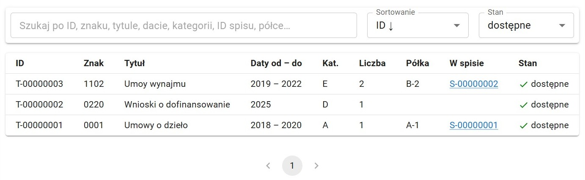
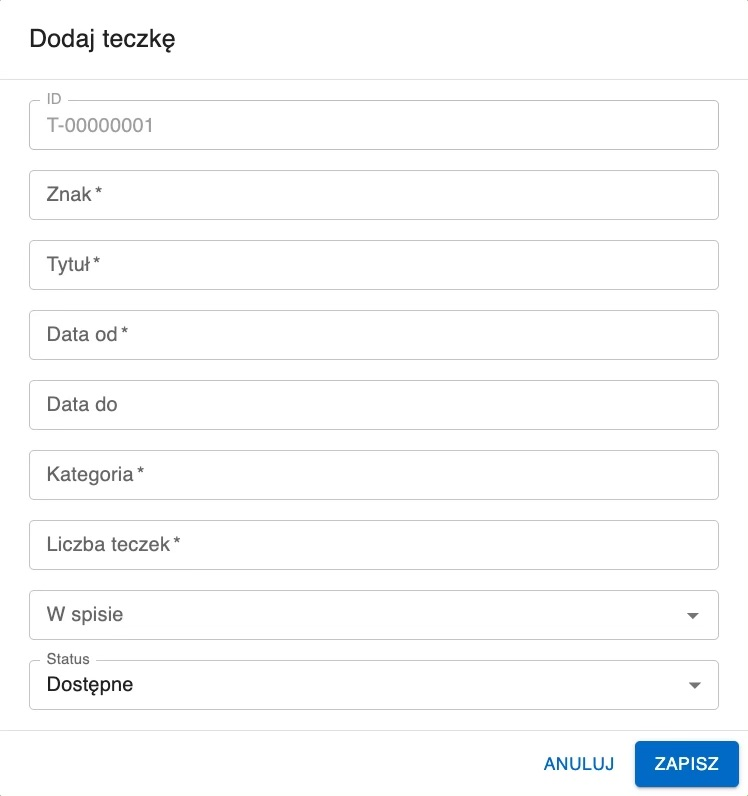

Teczki
Moduł Teczki przedstawia oraz umożliwia edycję zbioru teczek wprowadzonych do systemu.

Przeszukiwanie listy teczek
Pasek wyszukiwania daje możliwość filtrowania listy teczek. W wyszukiwarce można wpisać dowolny ze szczegółów teczki, np. jej półkę, spis lub tytuł.
Listę można sortować według wielu kryteriów. Aby to zrobić należy kliknąć w Sortowanie na pasku wyszukiwania (domyślne sortowanie: ID malejąco).
Pole Stan pozwala wybrać teczki z jakim statusem mają być wyświtlane. Opcjami do wyboru są:
- Dostępne - wszystkie teczki znajdujące się w archiwum (domyślne)
- Zniszczone - wszystie teczki, które zostały zniszczone
- Wszystkie - zarówno dostępne jak i zniszczone teczki
Aby podjąć operację z elementem listy należy go wybrać. Aby to zrobić należy kliknąć w niego na liście.
Aby usunąć zaznaczenie z elementu listy należy wybrać z paska narzędzi przycisk Odznacz. Taki sam efekt daje kliknięcie w puste miejsce poza tabelą.
Przeglądanie następnych stron listy umożliwiają strzałki pod tabelą.
Dodawanie teczki
Wybranie przycisku Dodaj z paska narzędzi spowoduje otwarcie okna dodawania nowej teczki. Okno to zawiera pola:
- ID - liczba porządkowa teczki automatycznie generowana przez system
- Znak - znak teczki
- Tytuł - tytuł teczki
- Data od - data początkowa teczki
- Data od - data końcowa teczki (opcjonalne)
- Kategoria - kategoria teczki
- Liczba teczek - liczba fizycznych teczek
- W spisie - przypisanie teczki do istniejącego już w systemie spisu (opcjonalne)
- Status - Dostępne/Zniszczone, domyślnie Dostępne

Niszczenie a usuwanie teczki
Jeśli teczka jest fizycznie niszczona należy wybrać teczkę z listy a następnie wybrać z paska narzędzi przycisk Zniszcz, zmienia to jej status na Zniszczone. Teczka taka znika z domyślnego widoku listy teczek (aby ją wyświetlić należy zmienić sortowanie listy - więcej o tym w dziale Przeszukiwanie listy teczek).
Przycisku Usuń należy używać tylko i wyłącznie wtedy, gdy wybrana pozycja nie powinna nigdy się znajdować w systemie.
Użycie funkcji Usuń powoduje permamentne usunięcie elementu, podczas gdy Zniszcz zachowuje go w systemie, jedynie zmieniając jego status na Znieszczone.
Edycja szczegółów teczki
Po wybraniu teczki do edycji należy wybrać z paska narzędzi Edytuj. Spowoduje to otworzenie formularza identycznego do formularza dodawania.